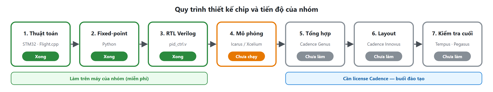
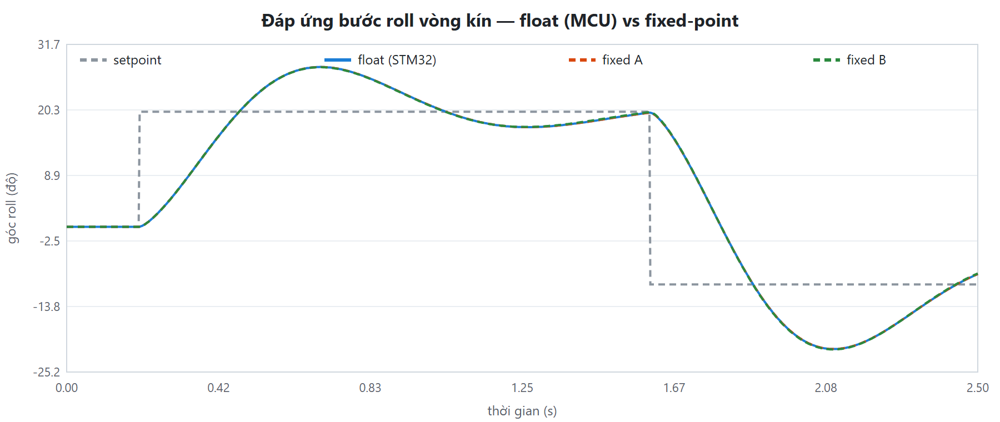
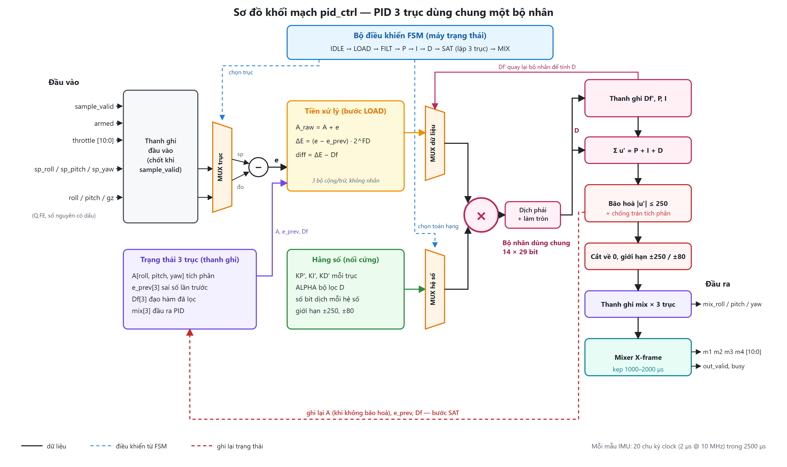
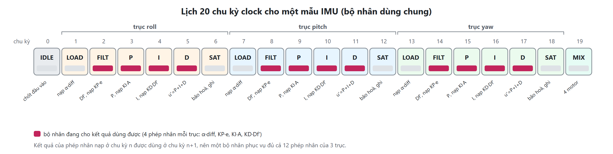
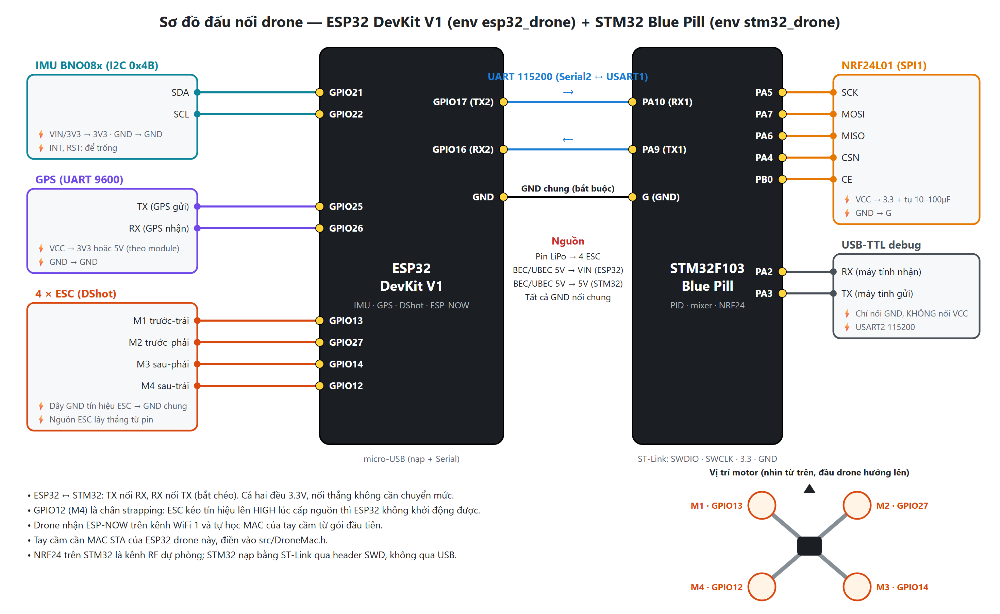
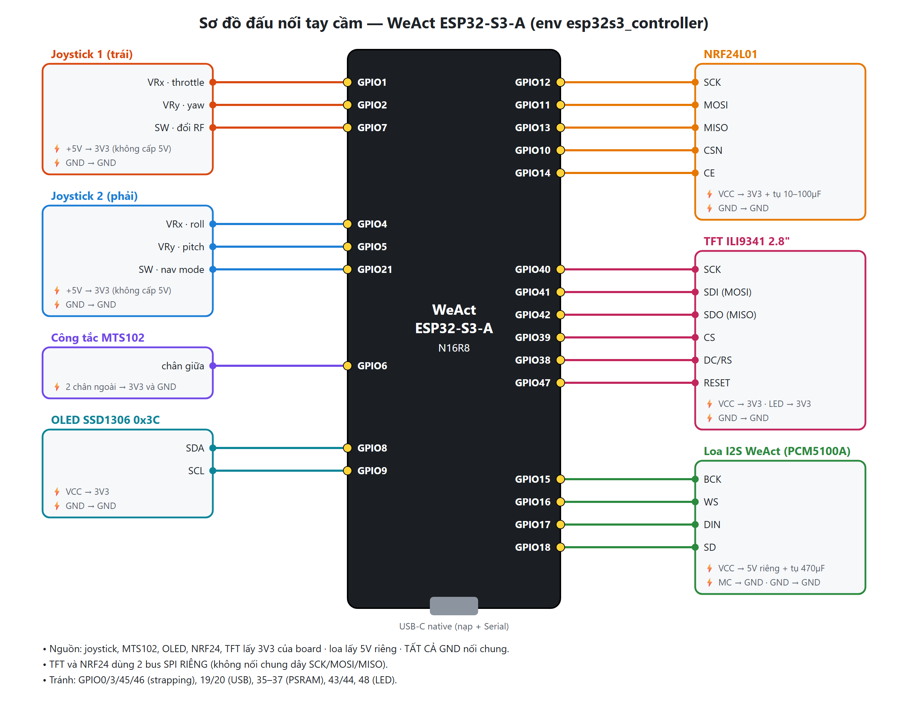
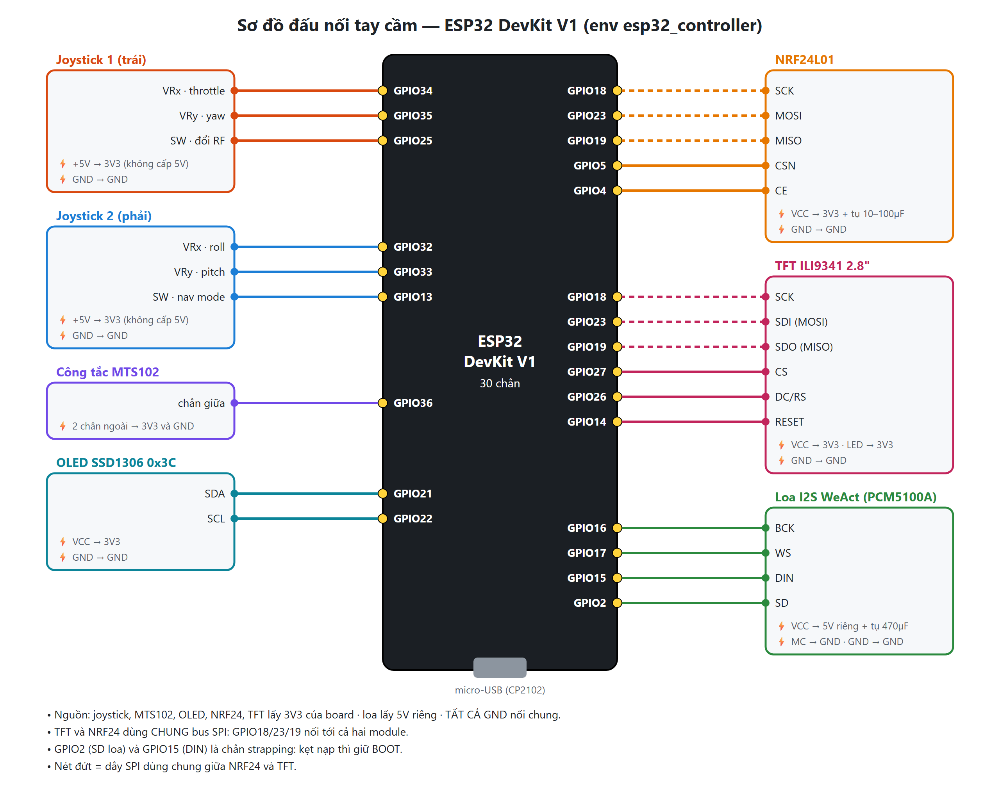

Chip điều khiển PID cho drone
Giải thích thiết kế cho cả nhóm — dễ hiểu, không cần biết trước về thiết kế vi mạch
Nhóm FPOLY UAV · Cuộc thi Thiết kế vi mạch cho Đô thị thông minh lần 3 · 24/09/2026
Vi điều khiển (MCU) như STM32 giống một đầu bếp đa năng. Bên trong có một bộ xử lý (CPU) biết làm mọi việc. Ta đưa
nó "công thức" là code C (Flight.cpp), nó đọc từng dòng rồi làm theo. Đổi code là nó làm việc khác.
Chip tự thiết kế giống một cái máy chỉ làm đúng một món. Không có CPU, không có code: mạch điện được nối cứng để làm đúng việc tính PID. Vì không phải "đọc công thức" nên chip nhỏ hơn, tốn ít điện hơn và nhanh hơn; đổi lại, làm xong là không sửa được.
Mục tiêu của nhóm: biến bộ điều khiển PID + bộ trộn động cơ đang chạy trên STM32 thành một mạch điện chuyên dụng, cho kết quả giống hệt bản đã bay thử.

Hình 1. Bảy bước làm một con chip. Ba bước đầu đã xong trên máy của nhóm; bốn bước sau cần công cụ Cadence.
| Bước | Làm gì | Công cụ | Trạng thái |
|---|---|---|---|
| 1. Thuật toán | Viết và bay thử thuật toán bằng phần mềm | STM32, Flight.cpp | Xong — drone bay được |
| 2. Mô hình fixed-point | Chuyển số thập phân sang số nguyên để mạch tính được | Python | Xong |
| 3. RTL | "Vẽ" mạch điện bằng ngôn ngữ Verilog | Verilog | Xong, biên dịch không lỗi |
| 4. Mô phỏng | Chạy thử mạch trên máy tính, so với đáp án | Icarus / Xcelium | Chưa chạy (thiếu phần mềm) |
| 5. Tổng hợp | Đổi Verilog thành hàng nghìn cổng logic thật | Cadence Genus | Chưa làm |
| 6. Layout | Xếp cổng lên mặt silicon và đi dây | Cadence Innovus | Chưa làm |
| 7. Kiểm tra cuối | Kiểm tra tốc độ, luật vẽ; xuất file gửi nhà máy | Tempus, Pegasus | Chưa làm |
Code STM32 dùng số thực (float), ví dụ góc = 12,3456°. Mạch tính số thực rất to và phức tạp, nên chip nhỏ gọn chỉ làm với số nguyên. Mẹo giống như ghi tiền: thay vì 12,35 nghìn đồng ta ghi 12350 đồng — vẫn chính xác mà chỉ còn số nguyên.
Mạch cũng vậy: nhân mọi giá trị với một số cố định rồi lưu thành số nguyên. Ví dụ với fe = 10, góc được nhân
với 210 = 1024: góc 12,3456° lưu thành 12642, và bước nhỏ nhất chip phân biệt được là 1/1024 ≈ 0,001°.
Câu hỏi then chốt là dùng bao nhiêu bit (bit = chữ số nhị phân). Nhiều bit thì chính xác nhưng mạch to và tốn điện; ít bit thì mạch nhỏ nhưng tính lệch so với STM32.
Mô hình Python (ic/model/) chạy song song hai bản PID: bản số thực chép y hệt Flight.cpp, và bản
số nguyên giống hệt mạch. Cả hai nhận cùng dữ liệu bay từ 7 kịch bản (16.000 chu kỳ): lơ lửng có gió, đổi góc đột ngột,
xoay yaw, gạt cần ngẫu nhiên, drone bị kẹt gây bão hoà, đầu vào ngẫu nhiên toàn dải, arm/disarm liên tục. Mô hình thử
lần lượt từng mức bit để tìm mức ít bit nhất mà kết quả vẫn gần như giống hệt.
| Cấu hình | Lệnh motor lệch so với STM32 | Góc bay lệch (vòng kín) | Phép nhân lớn nhất | Nhận xét |
|---|---|---|---|---|
| A — khớp MCU | tối đa 1 µs, ở 0,71% chu kỳ | 0,013° | 40 bit | Dễ chứng minh "chip = thuật toán đã bay thử" |
| B — tiết kiệm | tối đa 4 µs, ở 14% chu kỳ | 0,11° | 32 bit | Nhỏ hơn, lệch vẫn dưới nhiễu cảm biến (0,3°) |
| C — tối giản | tối đa 18 µs, ở 61% chu kỳ | 1,24° | 28 bit | Bắt đầu thấy khác biệt — không dùng |
Cảm biến IMU vốn có nhiễu khoảng 0,3°, nên với cấu hình B drone không thể "cảm thấy" khác biệt. Mạch hiện tại dùng cấu hình A; đổi sang B chỉ cần chạy lại một lệnh, không phải sửa mạch.

Hình 2. Đáp ứng khi đổi góc roll (0° → 20° → −10°) trên mô hình drone đơn giản: bản số thực (STM32) và hai bản số nguyên gần như trùng khít. Độ vọt lố là do mô hình drone giả lập, không phải drone thật.
Phép chia trong mạch rất tốn diện tích. Code STM32 có chia cho dt (thời gian giữa hai lần tính). Vì chip luôn tính đều 400 lần/giây, dt luôn bằng 2,5 ms, nên phần chia được tính sẵn vào hệ số từ trước. Chip chỉ còn cộng, nhân và dịch bit.
| Trên STM32 (số thực) | Trên chip (số nguyên) |
|---|---|
| dt đo từ đồng hồ, thay đổi từng lần | dt cố định 2,5 ms (400 Hz) |
| Tích phân: I = I + e·dt, giới hạn ±100 | A = A + e, giới hạn ±100/dt (chỉ cộng) |
| Đạo hàm: (e − e_trước) / dt | ΔE = e − e_trước (không chia) |
| u = kp·e + ki·I + kd·D, rồi nhân 3 | u' = KP'·e + KI'·A + KD'·ΔE với KP' = 3kp, KI' = 3ki·dt, KD' = 3kd/dt |
Verilog trông giống code nhưng không chạy từng dòng. Mỗi dòng mô tả một linh kiện và cách nối dây; công cụ sẽ dựng mạch thật từ mô tả đó. Mạch PID gồm các loại linh kiện chính: thanh ghi (ô nhớ nhỏ giữ một số), bộ cộng, bộ nhân, bộ chọn (MUX) chọn một trong nhiều đường dữ liệu, và máy trạng thái (FSM) điều phối mỗi nhịp clock làm việc gì.

Hình 3. Sơ đồ khối mạch pid_ctrl. Nét liền là dữ liệu, nét đứt xanh là điều khiển từ FSM, nét đứt đỏ là
ghi lại trạng thái sau mỗi lần tính.
| Khối | Nhiệm vụ |
|---|---|
| Thanh ghi đầu vào | Chốt setpoint, góc đo, gyro, ga, trạng thái arm khi có xung sample_valid (mẫu IMU mới) |
| MUX trục + bộ trừ | Chọn trục đang tính (roll, pitch hoặc yaw) và tính sai số e = setpoint − đo đạc |
| Trạng thái 3 trục | Thanh ghi nhớ tích phân A, sai số lần trước, đạo hàm đã lọc Df và đầu ra của từng trục |
| Tiền xử lý | Tính A + e, hiệu sai số ΔE và (ΔE − Df) bằng bộ cộng/trừ |
| Hằng số | Hệ số KP', KI', KD' mỗi trục, alpha bộ lọc, số bit dịch, các giới hạn — nối cứng vào mạch |
| Bộ nhân dùng chung | Linh kiện to nhất; lần lượt tính α·(ΔE − Df), KP'·e, KI'·A, KD'·Df cho cả 3 trục |
| Dịch phải + làm tròn | Đưa tích về đúng thang số nguyên, có làm tròn như mô hình |
| Σ, bão hoà, cắt, giới hạn | Cộng P + I + D; giới hạn ±250 và chống tràn tích phân; cắt về số nguyên; giới hạn ±250 (roll, pitch) hoặc ±80 (yaw) |
| Mixer X-frame | Trộn thành lệnh 4 động cơ, kẹp trong 1000–2000 µs; chưa arm hoặc ga ≤ 1000 thì cả 4 motor về 1000 |
Drone chỉ cần tính PID 400 lần mỗi giây, trong khi clock của chip chạy 10 triệu nhịp mỗi giây. Thời gian rảnh rất dư, nên thay vì làm ba bộ PID riêng cho roll, pitch, yaw, mạch dùng một bộ nhân, tính lần lượt từng trục — giống một thu ngân phục vụ nhanh ba khách thay vì mở ba quầy. Cả ba trục tính xong trong 20 nhịp, tức 2 µs, trong khi thời gian cho phép là 2500 µs.

Hình 4. Lịch 20 chu kỳ clock cho một mẫu IMU. Mỗi trục đi qua 6 bước; ô đỏ là lúc bộ nhân cho kết quả dùng được.
| Cổng | Hướng | Ý nghĩa |
|---|---|---|
clk, rst_n | vào | Clock; reset (mức thấp) |
sample_valid | vào | Xung báo có mẫu IMU mới |
clear | vào | Xoá trạng thái PID |
armed, throttle[10:0] | vào | Trạng thái arm, mức ga (µs) |
sp_roll, sp_pitch, sp_yaw | vào | Setpoint (độ, độ/s), số nguyên 22 bit có dấu |
roll, pitch, gz | vào | Góc và tốc độ quay đo từ IMU, cùng định dạng |
m1..m4[10:0] | ra | Lệnh 4 động cơ (µs, 1000–2000) |
mix_roll/pitch/yaw[9:0] | ra | Đầu ra PID từng trục |
out_valid, busy | ra | Báo có kết quả mới; báo đang tính |
| Tín hiệu | Số bit | Tín hiệu | Số bit |
|---|---|---|---|
| Đầu vào (góc, gyro, setpoint) | 22 | Sai số e | 23 |
| Tích phân A | 27 | Đạo hàm đã lọc Df | 28 |
| Tổng u' = P + I + D | 28 | Bộ nhân (toán hạng) | 14 × 29 |
Các con số này được tính theo trường hợp xấu nhất (góc ±180°, gyro ±2000°/s) để mạch không bao giờ tràn số. Chúng nằm
trong file pid_params.vh do Python tự sinh, nên mô hình và mạch luôn khớp nhau.
Chip đã sản xuất rồi thì không sửa được, nên phải chạy thử trên máy tính trước.
tb_pid_ctrl.v) đóng vai "người chấm bài": đưa dữ liệu vào mạch, đọc kết quả, so với đáp án.vectors.txt) là bộ đề kèm đáp án: 16.000 mẫu, mỗi mẫu gồm đầu vào và đầu ra đúng do mô hình
Python tính sẵn.vlog -lint):
0 lỗi, 0 cảnh báo. Chưa chạy mô phỏng vì ModelSim trên máy không có license. Cần cài Icarus Verilog (miễn phí) hoặc
dùng Cadence Xcelium, rồi chạy sh ic/sim/run_iverilog.sh để có kết quả PASS/FAIL.ic/| File | Vai trò |
|---|---|
model/pid_model.py | Hai bản PID: số thực (chép STM32) và số nguyên (giống mạch) |
model/analyze.py | Thử các mức bit, chọn cấu hình, xuất báo cáo |
model/out/report.md | Báo cáo kết quả chi tiết, dùng được cho slide và báo cáo thi |
model/export_rtl.py | Sinh file tham số và bộ đề cho mạch (chọn cấu hình A hoặc B) |
rtl/pid_ctrl.v | Mạch PID — sản phẩm chính |
rtl/pid_params.vh | Số bit, hệ số, giới hạn — sinh tự động, không sửa tay |
tb/tb_pid_ctrl.v, tb/vectors.txt | Người chấm bài và bộ đề |
sim/ | Lệnh chạy mô phỏng cho Icarus, Xcelium, ModelSim |
| # | Việc | Ghi chú |
|---|---|---|
| 1 | Cài Icarus Verilog, chạy mô phỏng | Có PASS mới chắc chắn mạch đúng |
| 2 | Chọn cấu hình A hay B | Phân vân thì lấy A cho an toàn |
| 3 | Có đổi alpha thành 13/64 không | Tiết kiệm 7 bit; phải sửa cả STM32 và bay thử lại |
| 4 | Xác nhận tần số 400 Hz | PID chỉ tính khi có mẫu IMU mới; IMU đang cấu hình 2,5 ms |
| 5 | Có xoá trạng thái PID khi arm không | Code STM32 hiện giữ tích phân từ lần bay trước sang lần arm sau |
| 6 | Học Verilog cơ bản (1–2 buổi) | Đủ để đọc hiểu pid_ctrl.v và trả lời giám khảo |
| 7 | Buổi đào tạo Cadence | Hỏi thẳng vào bước 5–7 (Genus, Innovus, kiểm tra cuối) |
| Thuật ngữ | Nghĩa |
|---|---|
| Bit | Chữ số nhị phân (0 hoặc 1). Càng nhiều bit, số càng lớn/chính xác nhưng mạch càng to |
| Fixed-point (dấu phẩy tĩnh) | Lưu số thập phân dưới dạng số nguyên đã nhân với 2n |
| Q.FE | Định dạng số nguyên có FE bit phần thập phân (ví dụ Q.10: đơn vị 1/1024) |
| Clock | Xung nhịp đều đặn; mỗi nhịp mạch tiến thêm một bước |
| Thanh ghi (register) | Ô nhớ nhỏ giữ một con số giữa các nhịp clock |
| MUX | Bộ chọn: chọn một trong nhiều đường dữ liệu đưa ra |
| FSM (máy trạng thái) | Bộ điều phối quyết định mỗi nhịp clock mạch làm việc gì |
| RTL / Verilog | Cách mô tả mạch bằng chữ; Verilog là ngôn ngữ dùng để viết |
| Testbench | Đoạn mã kiểm tra mạch: đưa dữ liệu vào, so kết quả với đáp án |
| Golden vectors | Bộ đề kèm đáp án đúng dùng để chấm mạch |
| Bit-exact | Kết quả khớp đúng từng bit với đáp án |
| Bão hoà / anti-windup | Giới hạn đầu ra; ngừng cộng tích phân khi đầu ra đã chạm giới hạn |
| Tổng hợp (synthesis) | Đổi Verilog thành mạch gồm các cổng logic có thật trong thư viện nhà máy |
| PDK | Bộ tài liệu của nhà máy: linh kiện có sẵn, luật vẽ, thông số |
| Layout / GDS | Bản vẽ vật lý của chip trên silicon; GDS là file gửi nhà máy |
Các sơ đồ đấu nối của nguyên mẫu drone và tay cầm hiện tại, trên đó thuật toán PID đã được bay thử.

Hình A1. Drone: ESP32 (IMU, GPS, 4 ESC) và STM32 (PID, NRF24).

Hình A2. Tay cầm điều khiển trên WeAct ESP32-S3-A.

Hình A3. Tay cầm điều khiển trên ESP32 DevKit V1.